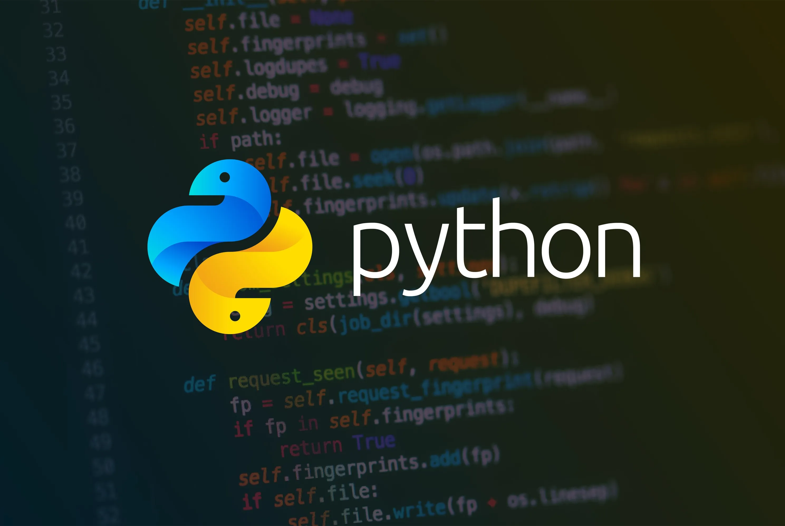
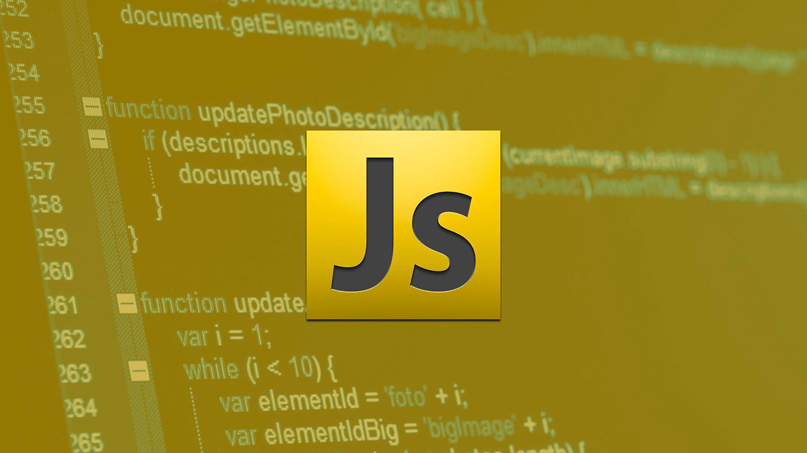
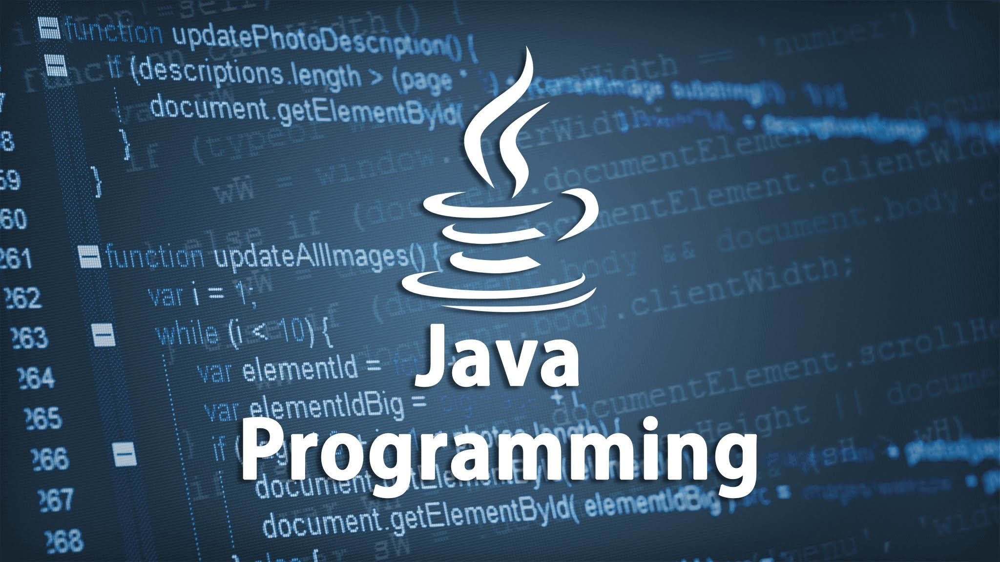
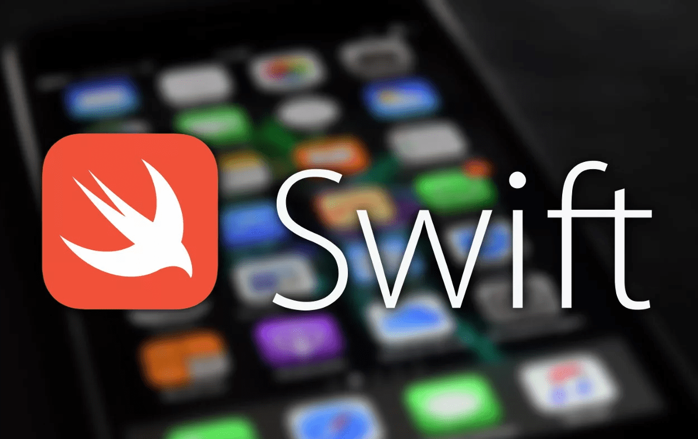
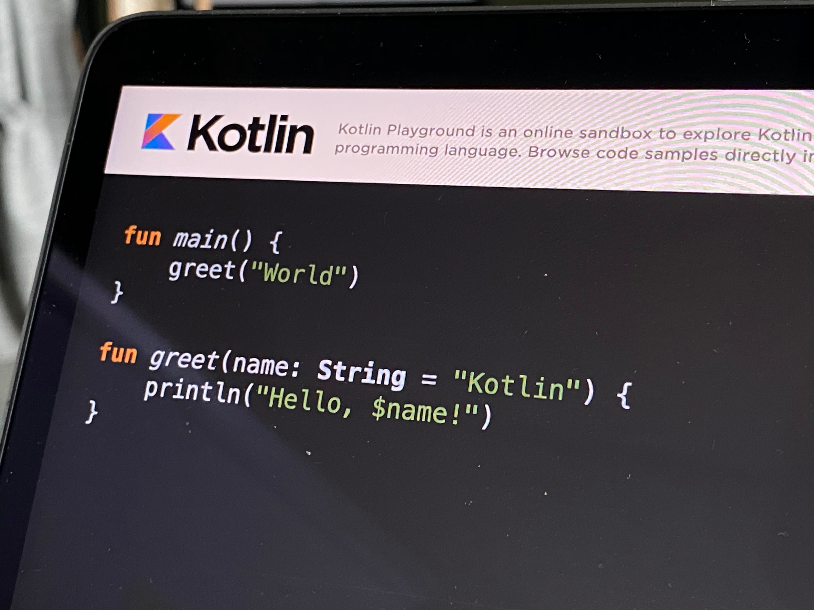

Топ-5 Языков Программирования для Начинающих в 2024 Году
В мире, где технологии развиваются с каждым днем, выбор первого языка программирования может стать решающим шагом в карьере каждого начинающего разработчика. В 2024 году рынок технологий предлагает множество языков программирования, но некоторые из них выделяются своей доступностью, широким спектром применения и поддержкой сообщества. Давайте рассмотрим топ-5 языков программирования, которые будут идеальным стартом для новичков.
Python
Python остается в лидерах среди языков программирования для начинающих благодаря своей читаемости, простоте и мощному набору библиотек. Он широко используется в веб-разработке, анализе данных, искусственном интеллекте и научных исследованиях. Благодаря дружелюбному сообществу и обширной документации, Python является отличным выбором для первого языка программирования.
JavaScript
JavaScript необходим для разработки интерактивных веб-сайтов и приложений. В эпоху интернета этот язык открывает перед начинающими разработчиками двери в мир фронтенд- и бэкенд-разработки с использованием Node.js. JavaScript постоянно развивается и адаптируется, что делает его актуальным выбором для новичков.
Java
Java — это язык с мощным инструментарием, использующийся в корпоративных системах, разработке мобильных приложений под Android и больших информационных систем. Стабильность, переносимость и масштабируемость делают Java востребованным навыком на рынке труда.
Swift
Для тех, кто заинтересован в создании приложений под iOS и macOS, Swift станет идеальным выбором. Apple разработала Swift как простой в изучении язык, предлагающий мощные функции для создания быстрых и надежных приложений.
Kotlin
Kotlin — современный язык программирования, который работает на платформе Java Virtual Machine и тесно интегрируется с Java. Благодаря своей безопасности, простоте и совместимости с Android, Kotlin быстро набирает популярность среди разработчиков мобильных приложений.
Выбор первого языка программирования — это важный шаг, который может определить весь путь развития в IT. Рассмотренные выше языки предлагают отличные возможности для начала карьеры в различных областях программирования. Главное — начать и не бояться экспериментировать.